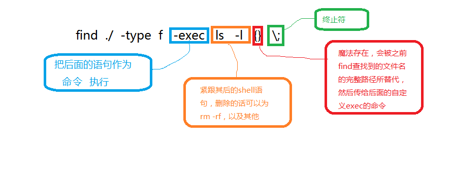

讲讲find，还有grep
之前在stackoverflow看了How to find all files containing specific text on Linux?
find的基本格式
find [path] [options] [tests] [actions]
选项简介
options
- -mount #不要搜索其他挂载系统
- -name 查找什么
- -iname
$ find / -mount -name test print
tests
- newer otherfile #比哪个文件新
- type f #是文件
- type d #是文件夹
actions
- -exec command
- -ok command
图画的有点丑，哈哈
- -exec ls -l {} \; 
这个例子就是讲如何在当前文件夹下找出包含某个字符的文本。当然这是说明你知道这个字符在这个文件夹下。反过来我出个小问题，假如你想找出包含某个字符的文本，你不知道这个文本在哪，但你知道他包含什么。你知道这个文件里大概有个什么样的字符，你需要查找到他，该怎么办？
bash
$ find / -type f -exec grep -H 'text-to-find-here' {} \;
$ grep -rnw '/path/to/somewhere/' -e "pattern"

还有w是word-regexp,l是show filename not the result itself, grep其实没怎么讲，因为我都是常用的也就是-iroEn几个选项，其他的很少用，剩下的配合awk了
解密就是需要配合-l选项就行了，当时我是不知道shadowsocks在搬瓦工的位置在哪，但我知道配置文件的格式，显而易见。So easy.
最后，看看ls和phantomjs里面的列文件比较
这个列文件比ls快了不少，刚才去找之前的测试记录，但是竟然没了。 当然既然测试数据找不到了，那就说明这个不具有说服性。暂且列出，放于此处。
```js // List all the files in a Tree of Directories
“use strict”; var system = require(‘system’);
if (system.args.length !== 2) { console.log(“Usage: phantomjs scandir.js DIRECTORY_TO_SCAN”); phantom.exit(1); //exit status mean 1 is wrong }
var scanDirectory = function (path) { var fs = require(‘fs’); if (fs.exists(path) && fs.isFile(path)) { console.log(path); } else if (fs.isDirectory(path)) { fs.list(path).forEach(function (e) { if ( e !== “.” && e !== “..” ) { //< Avoid loops scanDirectory(path + ‘/’ + e); } }); } };
scanDirectory(system.args[1]); phantom.exit();
```